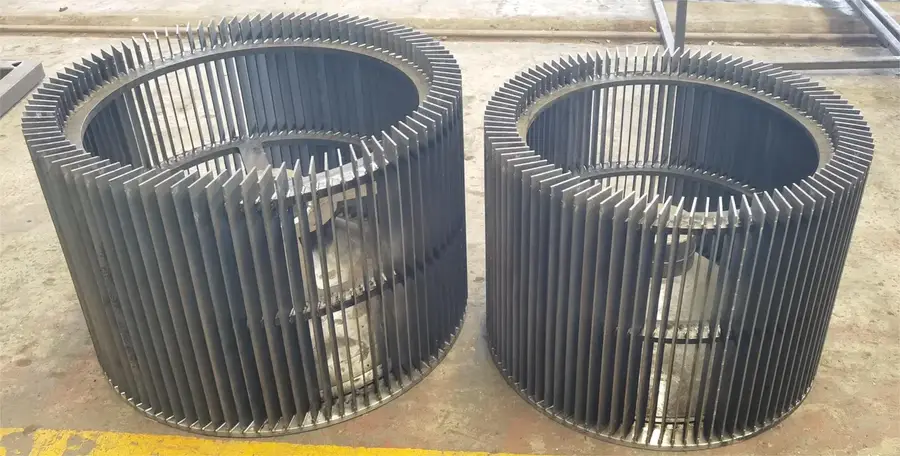
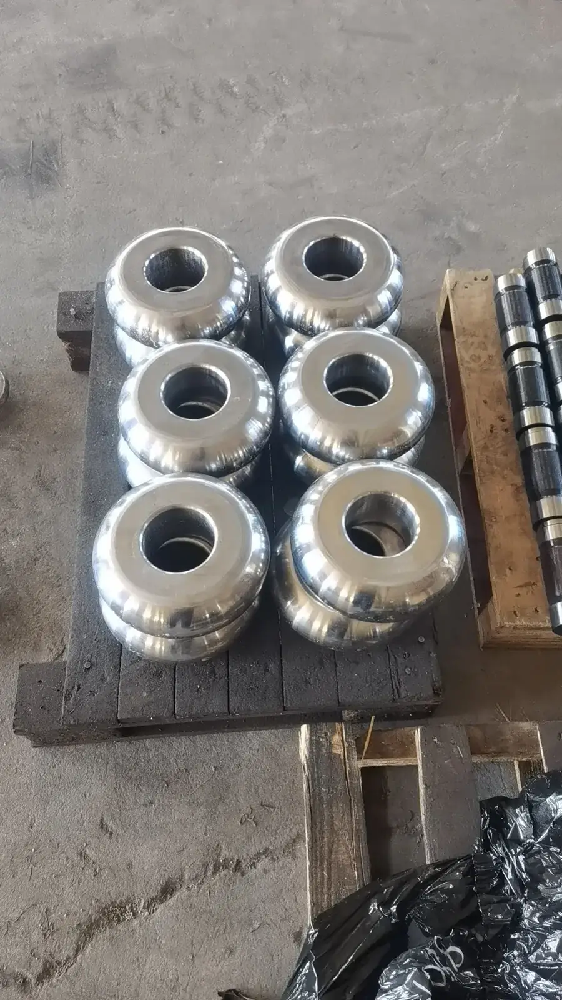

Blow bars in impact crushers benefit from high-chrome cast iron's superior abrasion resistance. Cr26 provides maximum wear life for hard, abrasive feed materials. Ideal for secondary and tertiary crushing.
Excellent abrasion resistance with M7C3 carbide network; 3-5x longer life than Mn steel in pure abrasive wear; ideal for...
Better toughness than Cr26 with slightly lower abrasion resistance; preferred for impact + abrasive combined conditions ...

Mill liners made from high-chrome cast iron provide exceptional wear resistance in grinding applications. Cr26 liners last 2-3x longer than Cr-Mo steel in abrasive ore conditions.
Excellent abrasion resistance with M7C3 carbide network; 3-5x longer life than Mn steel in pure abrasive wear; ideal for...
Better toughness than Cr26 with slightly lower abrasion resistance; preferred for impact + abrasive combined conditions ...
High-chrome grinding balls provide superior wear resistance and low breakage rates in ball mill grinding. Cr26 balls maintain shape and size consistency for efficient grinding performance.
Excellent abrasion resistance with M7C3 carbide network; 3-5x longer life than Mn steel in pure abrasive wear; ideal for...
Pump impellers and volute liners in slurry pumping applications. High-chrome cast iron resists both erosion and corrosion in aggressive slurry environments.
Excellent abrasion resistance with M7C3 carbide network; 3-5x longer life than Mn steel in pure abrasive wear; ideal for...
Better toughness than Cr26 with slightly lower abrasion resistance; preferred for impact + abrasive combined conditions ...
| Models | C | Si | Mn | Cr | Mo | Ni |
|---|---|---|---|---|---|---|
| Cr26 | 2.0-3.3 | ≤1.0 | 0.5-1.5 | 23.0-30.0 | 1.0-3.0 | ≤1.5 |
Excellent abrasion resistance with M7C3 carbide network; 3-5x longer life than Mn steel in pure abrasive wear; ideal for vertical mill rollers and VSI rotors
| Models | C | Si | Mn | Cr | Mo | Ni |
|---|---|---|---|---|---|---|
| Cr20 | 2.0-3.0 | ≤1.0 | 0.5-1.5 | 18.0-23.0 | 1.0-3.0 | ≤1.0 |
Better toughness than Cr26 with slightly lower abrasion resistance; preferred for impact + abrasive combined conditions like ball mill liners and impact crusher blow bars